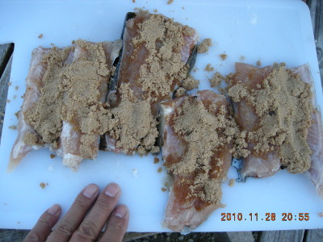
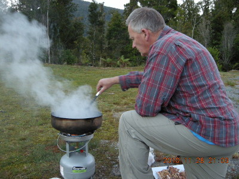
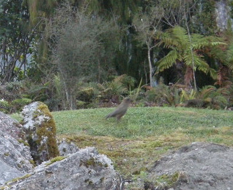
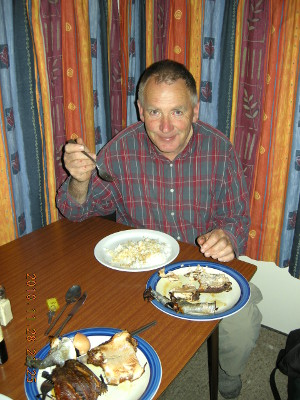

釣行日誌 ＮＺ編 「翡翠、黄金、そして銀塊」
鱒の燻製に舌つづみ
2010/11/28(SUN)-3
時刻は午後８時20分過ぎ。日の長い夏のウェストランドもあたりはだいぶ薄暗くなってきた。手漕ぎボートで帰る途中、ブリントさんが、夕まづめは何が起こるかわからないので、ラインを繰り出してストリーマーを引っ張り、ハーリングしてみろと言った。小さな黒いウーリーバガーを引っ張りながら、僕はボートに揺られた。ブリントさんは黙々とボートを漕いで桟橋に向かう。15分ほどの船旅で、ロッジ前の桟橋に着いた。残念ながらハーリングにアタリは無かった。２人してボートを元の場所までずり上げ、ロッドと釣り上げた鱒を持って小径を戻る。
ロッジの部屋の前に停めた車から、ブリントさんは燻製を作るためにプロパンガスボンベ一体型のコンロと鍋を取り出してセッティングを始めた。次に鱒を台所でさばき、切り身にしてからブラウンシュガーをまぶし、下ごしらえを行った。

ブリントさんは、既製品のスモーカーは使わず、底の深い平鍋で燻製を作る。時間が来るとフタを取って、出来上がりを確認していた。

彼がロッジの庭で燻製を作っていると、近くの森から野鳥のケア（ミヤマオウム）が現れて芝生の上を歩いている。あまり人を怖がらないようだ。僕はしばし見とれて写真を撮した。

御飯の準備は、米が主食の日本人であるタケシがふさわしいだろう、という命を受けて、電気コンロと鍋で僕が行った。今夜の晩餐は、白い御飯にブラウントラウトの燻製である。出来上がった燻製と御飯を皿に盛り、ささやかな宴会が始まった。時刻は９時半を回っていた。

嬉しいことにブリントさんが荷物の中から「ヤマサ」印の醤油の大瓶を取り出して来た。僕がおもむろに生卵を割り、醤油を少しかけてタマゴかけ御飯を作るのを見ていた彼は、美味しそうだから自分もやってみると言って、白い御飯にタマゴをかけた。まぁまぁイケル、というのが彼の感想だった。ブラウントラウトの燻製は見事な出来映えであり、味も素晴らしかった。何の木のチップを使ったのか聞き忘れたが、薫りが脂の乗った鱒の身と調和していて、あっという間に２切れを平らげてしまった。デザートには、以前にブリントさんと釣りを楽しんだという日本人の置き土産だという「チロルチョコレートのきなこもち味」が出てきた。日本からはるか遠く離れたこの辺境の地で巡り会う懐かしい味と、ブリントさんの心遣いに、僕は感動した。
お腹のふくれた僕たちはシャワーを浴びてから、白いシーツが気持ちいいベッドに横たわり、ぐっすりと眠った。夜の10時半であった。
釣行日誌ＮＺ編 目次へ
サイトマップ
ホームへ
お問い合わせ